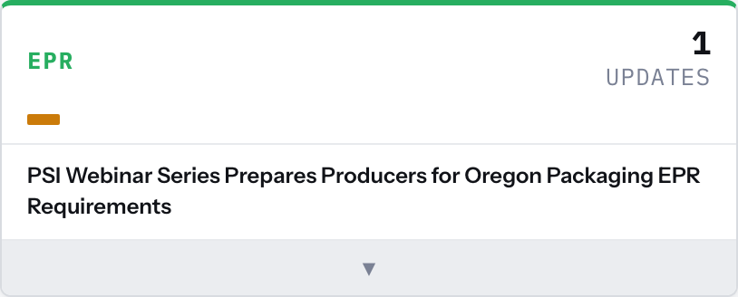
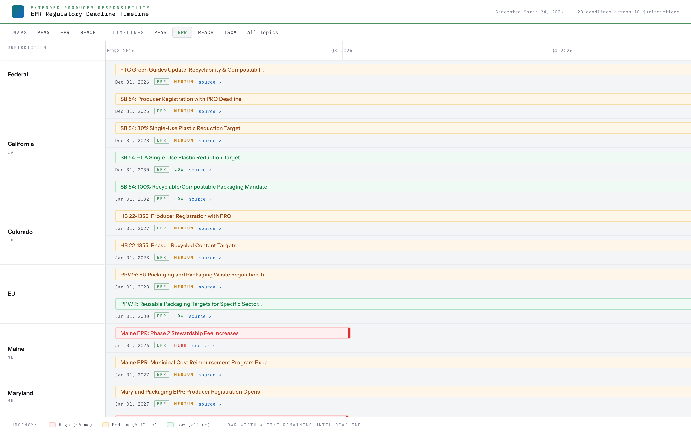

Compliance Dashboard
Compliance Intelligence Dashboard — User Manual
Version: 2026-03-24 build Audience: Compliance team — windows/doors manufacturing Scope: Full operational reference for all dashboard panels, views, and AI-generated content---
Table of Contents
---
1. Overview
The Compliance Intelligence Dashboard is a single-page regulatory monitoring interface that aggregates legislative activity, enforcement deadlines, AI-generated analysis, and state-level maps across seven compliance domains relevant to windows/doors manufacturing: PFAS, EPR, REACH, TSCA, Prop 65, Conflict Minerals, and Forced Labor.
It is designed for a small compliance team that monitors regulatory posture across federal and multi-state jurisdictions, tracks bill progression through legislative pipelines, and needs to surface actionable obligations before they become enforcement risks.
The dashboard refreshes on each generation run. All AI-generated content — the Executive Briefing, Director's Review, deadline analysis modals, and bill assessments — is produced at run time based on the article and legislative data ingested for that cycle. Timestamps on each section confirm data currency.
Primary access: Openpreview_dashboard_2026-03-24_185508.html in any modern browser. No login is required for local file access. The file is self-contained.
Mobile: The dashboard is responsive. On screens under ~600px, panels stack vertically, the navigation condenses to a hamburger toggle, and topic tabs become horizontally scrollable. All functionality is available on mobile, though the swimlane timeline and state maps are better suited to desktop. (see: c1-mobile.png)
---
2. Navigation & Customization
2.1 Topic Cards
A horizontal strip of eight cards runs across the top of the dashboard. Each card shows:
Clicking any card scrolls the page directly to that topic's section. This is the fastest way to navigate to a specific regulatory domain without using the left sidebar. (see: c2-nav-cards.png)
The left sidebar provides the same navigation in list form — Overview, individual regulations, Maps & Data, Timelines, and Archive. The top navigation bar exposes four cross-cutting views: Director Review, Timeline, PFAS Map, and Archive.
2.2 Customize Drawer
Click the Customize button (gear icon) in the header to open the panel visibility drawer. This drawer lists all eight available dashboard panels organized into three groups:
Each panel has a teal toggle switch. Click the switch to hide or show that panel. Changes take effect immediately and persist across sessions. To restore the default layout, click Reset to defaults at the bottom of the drawer. (see: c2-drawer.png)
Use this when preparing a focused review — for example, hiding all sidebar content to give the Executive Briefing and topic sections more readable width, or hiding the briefing entirely if you're drilling into specific deadlines.
---
3. Executive Briefing
What It Is
The Executive Briefing is an AI-generated narrative summary produced at each dashboard run. It synthesizes developments across all seven regulatory topics into a single dated analysis — the current run is stamped 24 Mar 2026. (see: c3-exec.png)
Structure
The briefing is divided into three collapsible sections:
| Section | Content |
|---|---|
| Opening | Situational overview — characterizes the overall regulatory environment for this cycle |
| Key Developments | Bulleted list of specific updates, each tagged with context markers identifying implications by topic or operational area |
| Outlook | Forward-looking watchpoints — legislation, rulemaking, or enforcement activity expected in the near term |
How to Use It
Click the triangle icon in the top right of the panel to collapse the entire briefing if you need screen space. Each collapsible section (Opening, Key Developments, Outlook) has its own toggle — expand only the sections relevant to your current task.
The inline tags on Key Developments items are the primary navigation aid within the briefing. Scan these tags to locate entries relevant to your product lines — direct product implications (coatings, seals, glass treatments) versus supply chain implications (substrate suppliers, hardware sourcing) are typically distinguished here.
The briefing does not replace reading individual article cards or deadline entries. Treat it as a triage layer: use it to determine which topic sections and deadline items to examine in detail during a given review cycle. Because it regenerates each run, comparing the Outlook section week-over-week reveals how the regulatory posture is shifting.
---
4. Topic Intelligence Sections
What They Are
Below the Executive Briefing, each of the seven compliance domains has a dedicated section displaying the article cards ingested for that run. These sections are the operational core of the dashboard — each article represents a distinct regulatory development sourced and classified during ingestion. (see: c4-pfas.png, c4-epr.png)
Layout
Each topic section contains:
Interacting with Articles
Click any bar in the mini-timeline to jump to that article and expand its detail view. The detail view includes:Priority Logic
Priority levels are assigned per article during ingestion based on jurisdiction scope, implementation timeline, and applicability to windows/doors manufacturing. A topic card showing HIGH means at least one article in that topic section is classified HIGH — it does not mean all articles in that section carry the same weight. Review individual articles to differentiate.
---
5. Compliance Dates & Deadlines
What It Is
The Compliance Dates panel aggregates upcoming regulatory deadlines across all monitored topics and jurisdictions into a single prioritized list. The current build tracks 37 deadlines in the collapsed default view and 59 deadlines in the full master timeline. (see: c5-collapsed.png)
Urgency Color Coding
| Color | Priority | Interpretation |
|---|---|---|
| Red | HIGH | Immediate action required; deadline within ~6 months or high penalty exposure |
| Amber | MEDIUM | Planning required; 6–12 months |
| Green | LOW | Monitor; >12 months or lower direct exposure |
Badges
Check these badges first at the start of each review cycle to identify what has changed since your last session.
Collapsed vs. Expanded List
The default collapsed view shows the 10 most urgent items. Click Expand (top right of the panel) to see all 37 items in the scrollable list view. Each entry in the expanded list shows: (see: c5-expanded.png)
Deadline AI Analysis Modal
Click any deadline entry to open the AI analysis modal for that specific obligation. The modal is structured into five sections: (see: c5-modal.png)
| Section | Content |
|---|---|
| What Is Required | The regulatory mandate in plain terms |
| Who Must Comply | Scope of covered entities — confirms whether your operations are in scope |
| What We Must Do | Company-specific enrollment, reporting, or product compliance steps |
| Company Impact | Severity badges — HIGH, SUPPLY CHAIN, DIRECT PRODUCTS — and rationale |
| Penalties for Non-Compliance | Enforcement actions, fine ranges, business consequences |
At the bottom of the modal, a 90/60/30-day preparation timeline displays color-coded milestones (red = critical action, orange = standard preparation step). Linked upstream deadlines — for example, PRISM PFAS registration as a prerequisite for a packaging compliance filing — appear here as cross-references.
Use the Add to Calendar button at the base of the modal to export the deadline to your calendar application.
The "+ 27 more" link surfaces related compliance obligations connected to the same regulatory action — useful for identifying downstream requirements you might otherwise miss.
Deadline Timeline Widget (Swimlane View)
Within the Compliance Dates panel, a swimlane timeline displays deadlines by topic on horizontal tracks spanning from today to approximately 1,195 days out. (see: c5-timeline.png)
Click Full → at the end of any swimlane to open the full per-topic timeline view for that regulatory area.
---
6. Legislative Activity
What It Is
The Legislative Activity section tracks active bills across all seven compliance domains, displaying a feed of recent legislative actions with status badges, jurisdictions, and AI-generated bill assessments. The current pipeline contains 729 active bills.
Bill Feed
Each entry in the feed shows:
Bill Detail Modal
Click any bill entry to open the AI analysis modal. The modal is organized into six sections: (see: c6-bill-modal.png)
| Section | Content |
|---|---|
| Bill Title & Synopsis | What the bill does |
| Current Stage & Next Steps | Where it is in the legislative process and what triggers advancement |
| Recent Action Timeline | Chronological list of actions taken on this bill |
| Company Impact | Direct products vs. supply chain exposure, with severity classification |
| Long-Term Passage Probability | AI assessment — treat as directional, not deterministic |
| Recommended Actions | Specific steps ranked by urgency |
The MONITORING tag in the top right of the modal indicates your team is already tracking this bill, preventing duplicate tracking effort.
Click View on LegiScan / State Legislature to open the full bill text in the originating legislative database.
Full-Screen Legislative History
Click the expand icon within the bill feed to open the full-screen legislative activity log. This view displays all tracked actions chronologically across all bills and jurisdictions. (see: c6-expand.png)
Use the status badge filters to narrow the view — for example, filter to PASSED to see only legislation that has cleared at least one chamber, or REFERRED to track early-stage bills entering committee. Press Escape or click Close to return to the dashboard.
Bills by Legislative Stage (Sidebar)
The right sidebar displays a Bills by Legislative Stage bar chart showing aggregate bill counts at each stage across all topics:
This chart is a macro indicator. A rising Committee count with a flat Passed count suggests legislation is accumulating without advancing — useful for assessing regulatory velocity in any given cycle.
---
7. Intelligence Maps
Three interactive maps provide geographic context for regulatory exposure. Access them via the top navigation (PFAS Map) or the left sidebar (Maps & Data).
7.1 PFAS Legislative Watch — State Map
Displays all 51 U.S. states and territories with detected PFAS legislative activity, color-coded by most advanced legislative stage: (see: c7-pfas-map.png)
| Color | Stage |
|---|---|
| Gray | Early advocacy / pre-discussion |
| Light tones | Introduced or referred |
| Mid tones | Committee or advanced |
| Green | Enacted |
Click any state tile to see:
Use Export to Excel to download the full dataset for integration with internal tracking systems or trade association reporting.
7.2 EPR Packaging Law — State Coverage Map
Displays the status of EPR packaging legislation across all U.S. states, classified into four categories: (see: c7-epr-map.png)
| Color | Classification |
|---|---|
| Dark blue | Comprehensive Programs |
| Medium blue | Limited Programs (1–2) |
| Light blue | Proposed Legislation |
| Gray | No EPR Programs |
Click any state to view program-specific details: active programs, key dates, and packaging reduction mandates. States with recent activity changes are marked with an amber indicator.
Toggle between map view and Deadline Timeline view using the control at the top of the panel. The timeline view is the same deadline bar format used in Section 5, filtered to EPR obligations by jurisdiction.
Download Excel exports the full state-by-state EPR status dataset.7.3 REACH SVHC — EU Coverage Map
Displays enforcement intensity across EU member states plus Norway, Iceland, Liechtenstein, and Switzerland. Relevant for teams managing SVHC disclosure obligations to EU-based customers or monitoring supplier country-of-origin exposure. (see: c7-reach-map.png)
The map uses a four-tier color gradient:
| Shade | Classification |
|---|---|
| Dark green | Priority — highest enforcement intensity and supplier exposure |
| Medium-dark green | Elevated |
| Medium-light green | Moderate |
| Pale green | Standard — full REACH coverage, lower direct relevance |
Click any country to open a detail panel showing:
The legend confirms current coverage as EU27 + UK + EEA, as of the generation date. Use this map to prioritize SVHC monitoring by geography and tailor supplier communication by enforcement jurisdiction.
---
8. Timeline Views
Full timeline views display per-topic or cross-topic deadline bars on a comprehensive chronological axis. Access them via Timeline in the top navigation bar or Full → from any swimlane in the Compliance Dates panel.
8.1 Per-Topic Timelines
Each topic (PFAS, EPR, REACH, TSCA, etc.) has a dedicated timeline view. The PFAS timeline, for example, covers 15 U.S. jurisdictions with deadlines plotted from Q3 2026 through Q4 2026 and beyond. (see: c8-pfas-timeline.png)
Each entry shows:
Filter by jurisdiction, deadline type, or urgency using the tabs at the top of the timeline view.
The EPR timeline covers 20 deadlines across 10 jurisdictions organized by region (Federal, California, Colorado, EU, Maine, Maryland). Click any regulation name or source link to access detailed requirement information. (see: c8-epr-timeline.png)
8.2 Master Timeline — All Deadlines
The master timeline consolidates all 59 upcoming deadlines across 18 jurisdictions on a single view. (see: c8-all-deadlines.png)
Jurisdictions run vertically (Federal through state alphabetical order). Deadline bars are positioned chronologically on the horizontal axis. Bar width represents time remaining.
Color coding in the master timeline:| Color | Priority | Time Remaining |
|---|---|---|
| Light pink | HIGH | <6 months |
| Yellow | MEDIUM | 6–12 months |
| Green | LOW | >12 months |
Filter using the topic tabs at the top — MAPS, PFAS, EPR, REACH, TSCA, and others — to isolate deadlines relevant to a specific compliance program. Click any bar to see full deadline details including name, due date, category badge, priority level, and source link.
---
9. Director's AI Review
What It Is
The Director's Review is a separate AI-generated strategic assessment page, accessible via the Director Review tab in the top navigation. It evaluates the dashboard's own intelligence quality for a given run — not a compliance status assessment, but a meta-analysis of how useful the current data set is and where it falls short. (see: c9-director.png)
Scored Metrics
Three metrics appear as scored cards at the top:
| Metric | Current Score | What It Measures |
|---|---|---|
| Usefulness | 5/10 | Whether the information is relevant and actionable for your specific operations |
| Actionability | 3/10 | Whether the dashboard tells you what to do, not just what is happening |
| Signal/Noise Ratio | 5/10 | Whether high-priority items are distinguishable from background regulatory activity |
These scores are generated by the AI based on the data ingested for that run. A low Actionability score — as seen here — means the system is detecting regulatory changes but is not surfacing enough context to specify which actions to take first. The narrative below each score explains the specific drivers.
How to Use It
The Director's Review is organized into three sections:
The questions in the third section are ranked by strategic importance. Use them to direct the next data integration effort or dashboard configuration change. If SVHC supplier data is flagged as missing, that is a prompt to feed that data into the next run rather than an inherent dashboard limitation.
Cross-State Pattern Analysis
A subordinate section within the Director's Review displays coordinated legislative pattern analysis across states. The current report covers 36 states with PFAS-related activity. (see: c9-cross-state.png)
Each state entry shows:
A red-highlighted watch list prioritizes the five states with the most aggressive near-term enforcement posture: Virginia, Maryland, New York, Minnesota, and New Jersey. Each entry includes specific product category restrictions and implementation timelines.
Italicized action items below each state entry provide tactical next steps — auditing specific product lines, engaging trade associations, tracking regulatory guidance. These should be completed before the listed bills reach final passage.
Check the generated timestamp (shown as 2026-03-23 in the current build) to confirm data currency before acting on state-level positions.
---
10. Analytics
10.1 28-Day Article Trend Chart
The trend panel displays article volume over the past 28 days for each monitored compliance topic, rendered as a multi-line chart. (see: c10-trends.png)
Use this chart to detect regulatory spikes — a sudden volume increase in a previously quiet topic area is an early signal that rulemaking, enforcement action, or legislative momentum is accelerating. Flat or declining lines indicate a quieter period for that domain, which may be appropriate for reducing review frequency.
This chart does not show article quality or severity — a spike in article count could be driven by minor state-level notices rather than federal action. Cross-reference volume spikes with the topic section's priority indicators before escalating.
10.2 Bill Pipeline Funnel
The bill pipeline displays 729 active bills organized by topic and legislative stage in a stacked bar visualization. (see: c10-funnel.png)
Topics covered: Conflict Minerals, EPR, Forced Labor, PFAS, Prop 65, TSCA.
Stages displayed left to right:
| Stage | Badge Color |
|---|---|
| Introduced | Gray |
| Committee | Blue |
| Passed | Orange |
| Advanced | Red |
The bar length represents total bill volume per topic. The stage distribution shows where legislation is concentrating or stalling. PFAS carries the highest volume (375 total bills) with significant committee concentration — indicating active legislative attention without broad enactment yet.
Click the expand icon on any topic row to drill into individual bills for that topic, or filter by stage to isolate the most advanced legislation across all topics. The funnel is most useful for tracking attrition — how many bills enter committee versus how many advance — which informs passage probability assessments in individual bill modals.
---
11. Resources
Regulatory Glossary
The glossary is accessible via the left sidebar or bottom of the dashboard. It contains 86 regulatory terms organized by category. (see: c10-glossary.png)
Categories include: Chemicals, US Federal, EU Regulation, State Agency, and 16 others. Each entry includes:
Color-coded tags indicate regulatory domain: blue = US Federal, teal = chemical classifications. This is auto-generated content — verify definitions against primary regulatory sources for formal compliance determinations.
Calendar Export
Deadline entries throughout the dashboard — in the Compliance Dates panel and in individual deadline AI analysis modals — include an Add to Calendar button. This exports the deadline date, obligation description, and jurisdiction to a standard calendar file compatible with Outlook, Google Calendar, and Apple Calendar.
Export individual deadlines from their AI analysis modals, or use the bulk export options in the expanded deadline list to push multiple deadlines at once. The exported event includes the compliance category, priority level, and source link in the event notes field.
---
Appendix: Quick Reference — Color Coding
| Color | Context | Meaning |
|---|---|---|
| Red | Priority badges | HIGH urgency / <6 months |
| Amber/Orange | Priority badges | MEDIUM urgency / 6–12 months |
| Green | Priority badges | LOW urgency / >12 months |
| Red (badge) | Topic card NEW badge | New articles added this run |
| Teal | Toggle switches | Panel enabled |
| Blue | Bill status | ACTION — recent legislative action |
| Green | Bill status | PASSED |
| Teal | Bill status | ADVANCED |
| Gray | Bill status | REFERRED |
| Orange | Bill status | AMENDMENT |
| Dark green | REACH map | Priority enforcement jurisdiction |
| Pale green | REACH map | Standard coverage jurisdiction |
| Dark blue | EPR map | Comprehensive program enacted |
| Gray | EPR map | No EPR program |
---
Appendix: Known Limitations
Screenshot Reference

# The Dashboard at a Glance You'll see eight compliance topic cards across the top displaying article counts and priority levels—PFAS (15 articles, 3 HIGH), EPR (1 article, 1 MED), REACH (3 articles, 2 HIGH), TSCA (8 articles, 2 HIGH with NEW badge), Prop65 (5 articles, 2 MED with NEW badge), ConflictMinerals (3 articles, 2 HIGH), and ForcedLabor (3 articles, 3 HIGH)—allowing you to quickly spot which regulations have new or urgent updates. The Executive Briefing section dominates the center, providing dated analysis (24 Mar 2026) with collapsible Opening, Key Developments, and Outlook segments that you can expand or collapse using the collapse toggle. The right sidebar displays Regulatory Status with color-coded activity heat maps for each regulation, Bills by Legislative Stage showing progression from Pre Discussion (16) through Committee (19) to Passed One (5), and a High Relevance States map highlighting which U.S. states are most affected—with red, orange, and green indicators showing urgency levels. The left navigation menu lets you jump to Overview, specific regulations, Maps & Data, timelines, or archived content, while the top navigation includes Director Review, Timeline, PFAS Map, and Archive tabs for deeper dives into specific topics.

# Mobile Layout: Compliance Intelligence Dashboard On mobile, the dashboard stacks vertically to fit a 390px screen, with the header compressed to show only the "COMPLIANCE INTEL" logo and a menu toggle (M) in the top right. The date range and search bar sit below as a single row, followed by horizontally scrollable tab buttons (DIRECTOR REVIEW, TIMELINE, PFAS MAP, ARCHI) that you swipe through to switch views. A green "28/28" badge and "Customize" gear icon let you filter or adjust the current view. The main content area displays full-width sections—"EXECUTIVE BRIEFING," "OPENING," "KEY DEVELOPMENTS," and "OUTLOOK"—in reading order, with teal underlines marking section headers. Bullet points and numbered items flow naturally down the screen, and you scroll vertically to browse all briefing content without horizontal scrolling interrupting the narrative.

# Topic Navigation Cards At the top of your dashboard, you'll find a horizontal strip of topic cards that serve as quick links to different compliance areas. Each card displays the topic name, number of articles published this week, and a risk level indicator (HIGH, MED, or LOW) in color-coded text. Click any card to scroll directly to that topic's section on the dashboard, allowing you to navigate without manual scrolling. Red badges with white numbers appear on new topics, showing how many articles were recently added—in this example, TSCA and Prop65 each have 2 NEW badges. The risk level indicators use red (HIGH), orange (MED), and other colors to highlight which topics have the most critical updates this week, helping you prioritize your review at a glance.

# Customize Dashboard Drawer You can toggle individual dashboard panels on or off using the switches shown in this drawer. The panels are organized into three sections—**Top Row**, **Main Content**, and **Sidebar**—so you can control which information appears in each area of your dashboard. All eight available panels are listed with teal toggle switches that turn green when enabled; simply click any switch to show or hide that panel. Your customization choices are automatically saved, so your dashboard layout persists the next time you log in. If you want to restore all panels to their default enabled state, click the **Reset to defaults** button at the bottom of the drawer.

# Executive Briefing Panel The Executive Briefing delivers an AI-generated summary across all seven regulatory topics, organized into collapsible sections: Opening (situational overview), Key Developments (bullet-pointed updates with inline tags marking specific implications), and Outlook (forward-looking watchpoints). You can collapse the entire panel using the triangle icon in the top right to maximize screen space. Each development is tagged with context markers—like **
** indicators showing where substantive breaks occur in the original analysis—allowing you to scan for company-specific implications or quickly locate details relevant to your product lines. The panel updates automatically with each run, so you can track how regulatory posture shifts week to week without manually reviewing source documents.

# PFAS Topic Section You can see 15 regulatory updates organized as a horizontal timeline at the top, with color-coded bars indicating each article's urgency level—red for high priority, amber for medium, and green for lower priority items. The latest article, "Minnesota PRISM System Updated; MPCA Holds CUU Webinar," appears as the primary headline below the timeline. Each colored bar represents a distinct regulatory development, allowing you to quickly scan the frequency and severity of recent PFAS-related activity. Clicking any bar in the timeline navigates you to the corresponding article and its source link, while the expandable dropdown (indicated by the triangle icon) reveals additional details about the selected update, including its impact classification and relevance to your supply chain or direct operations.

# EPR Updates You're viewing the EPR (Extended Producer Responsibility) section of your compliance dashboard, which tracks packaging regulation developments across multiple states. The card displays a featured article titled "PSI Webinar Series Prepares Producers for Oregon Packaging EPR Requirements," highlighted with an orange indicator bar on the left to denote this topic category. The "1 UPDATES" badge in the top right shows you have one active item in this section. Clicking the card or the downward chevron at the bottom expands the full article details and related regulatory updates for packaging EPR laws in states like California, Maine, Oregon, and Colorado.

# Upcoming Compliance Dates Panel The Upcoming Compliance Dates panel displays 37 compliance deadlines in a collapsed list view, showing the 10 most urgent items by default. Each deadline is color-coded by priority: red indicates HIGH urgency requiring immediate attention, amber shows MEDIUM priority items, and green marks LOW priority deadlines. New or recently modified deadlines are flagged with 'New' and 'Updated' badges so you can quickly identify what's changed since your last review. Click the **expand** button in the top right corner to view all 37 items and access additional filtering or sorting options for comprehensive deadline management.

# Compliance Dates — Expanded You can view a comprehensive list of upcoming compliance deadlines organized chronologically by date. Each entry displays the deadline date on the left, followed by the regulation name, jurisdiction, compliance category (such as EPR or PFAS), and a brief description of the requirement. Color-coded badges and labels help you prioritize: green "New" badges indicate recently added deadlines, while red "HIGH" tags mark regulations with significant impact or urgency. The jurisdiction appears in gray text, and the compliance category (EPR, PFAS) is color-coded for quick scanning. Click the expand icon in the top right corner to open the full-screen modal and view all 37 upcoming compliance dates without space constraints.

# Deadline AI Analysis Modal This modal breaks down Minnesota SF 3 packaging waste compliance into five organized sections: "What Is Required" explains the regulatory mandate, "Who Must Comply" defines covered producers broadly, and "What We Must Do" outlines your company's specific enrollment and reporting obligations. You'll find severity indicators in the "Company Impact" section—badges labeled "HIGH" flag direct products (your outbound packaging) and "SUPPLY CHAIN" risks, helping you prioritize response efforts. The "Penalties for Non-Compliance" section details enforcement actions and business consequences, while the "Preparation Timeline" at the bottom displays a visual 90/60/30-day countdown with color-coded milestones (red for critical, orange for standard) and linked upstream deadlines like PRISM PFAS registration. You can export this deadline to your calendar using the button at the modal's base, and expand related compliance items using the "+ 27 more" link to surface connected regulatory obligations.

# Deadline Timeline — Swimlane View The Deadline Timeline organizes your regulatory deadlines by topic in horizontal swimlanes, making it easy to spot upcoming obligations at a glance. Each colored dot represents a single deadline positioned along a timeline spanning from today to 1,195 days out, with red dots indicating HIGH urgency, amber dots showing MEDIUM priority, and topic-colored dots marking LOW priority items. A pulsing ring around any dot signals a newly tracked deadline you should review. Hover over any dot to view deadline details, or click "Full →" at the end of each swimlane to dive deeper into that topic's complete deadline schedule. The numbered badges on dots (like the "3" on PFAS or "8" on EPR) indicate how many deadlines share that same date, helping you quickly identify deadline clusters that require coordinated action.

# Bill AI Analysis Modal The modal displays a comprehensive bill overview organized into six key sections: bill title and synopsis at the top, current legislative stage with next steps, recent action timeline, company impact assessment (broken into direct products and supply chain), long-term passage probability, and recommended actions. Color-coded badges indicate bill status (EPR, committee assignment) and legislative jurisdiction, allowing you to quickly identify relevant bills for your industry. You can click "View on LegiScan / State Legislature" to access the full bill text, and the "MONITORING" tag in the upper right signals that your team is already tracking this bill—helping you avoid duplicate tracking efforts and focus on actionable risks.

# Legislative Activity – Full History The full-screen modal displays a comprehensive list of legislative actions sorted chronologically, with each entry showing the date, action status, bill identifier, jurisdiction, and a brief description of the legislation. You can quickly scan the color-coded status badges—such as ACTION (blue), PASSED (green), ADVANCED (teal), REFERRED (gray), and AMENDMENT (orange)—to identify where each bill stands in the legislative process. Additional metadata tags (like "committee," "introduced," or "passed_one") and notes below each entry provide context on sponsorships, vote counts, or referral details. To exit this expanded view and return to the dashboard, click the **Close** button in the top right corner or press Escape.

# PFAS Legislative Watch — State Map This interactive map displays all 51 U.S. states and territories with detected PFAS legislative activity, organized by their most advanced stage of development. Each state is color-coded from early advocacy signals (gray) through enacted legislation (green), allowing you to quickly assess the regulatory maturity across jurisdictions. Click any state tile to view its active bills, most recent legislative actions, and engagement guidance specific to that jurisdiction. Corner dot indicators on each state show your confidence level in the data (green = high, amber = medium, gray = low), helping you prioritize outreach based on information reliability. Use the "Export to Excel" button to download the full dataset for analysis or integration with your internal tracking systems.

# EPR State Tracker Map This interactive U.S. map displays the status of Extended Producer Responsibility legislation across all states, color-coded to show your compliance landscape at a glance. States are classified into four categories: **Comprehensive Programs** (dark blue), **Limited Programs 1-2** (medium blue), **Proposed Legislation** (light blue), and **No EPR Programs** (gray). Click any state to view detailed information about its specific EPR requirements, active programs, and key dates—for example, clicking California reveals its packaging reduction mandates, electronics recycling requirements, and tire stewardship programs. The map includes an amber indicator for states with recent activity updates, helping you identify which regulations have changed. Use the **Download Excel** button to export the full dataset and the **Deadline Timeline** toggle to switch between map and timeline views for tracking compliance deadlines across jurisdictions.

# REACH SVHC — EU Coverage On this map, you can view enforcement intensity across all EU member states plus Norway, Iceland, Liechtenstein, and Switzerland by clicking directly on each country. The map uses a four-tier color gradient—from dark green (Priority: highest enforcement and supplier exposure) through lighter shades down to pale green (Standard: full REACH coverage with lower direct relevance)—so you can instantly identify which jurisdictions pose the greatest compliance risk. When you select a country, a detail panel appears on the right showing the responsible enforcement body, supplier relevance classification, and critical notes specific to that region. A legend at the bottom explains each color category and confirms that the data reflects current EU27 + UK + EEA coverage as of the generation date shown. Use this map to prioritize your SVHC monitoring efforts and tailor your supplier communication strategies by geography.

# PFAS Regulatory Deadline Timeline You can view all PFAS compliance deadlines across 15 U.S. jurisdictions on this comprehensive timeline, organized chronologically from Q3 2026 through Q4 2026 and beyond. Each deadline appears as a horizontal bar positioned according to its date, with the jurisdiction listed on the left side and the specific requirement described in the center panel. Color-coded urgency badges—**High** (red, <6 months), **Medium** (orange, 6-12 months), and **Low** (green, >12 months)—indicate how quickly you need to act on each deadline. The **PFAS** tag on each entry links to detailed source information, while the bar width visually represents time remaining until the deadline passes. You can filter by jurisdiction, deadline type (PFAS, EPR, REACH, TSCA), or urgency level using the tabs at the top to focus on requirements relevant to your operations.

# All Deadlines — Master Timeline This view displays all 59 upcoming regulatory deadlines across 18 jurisdictions on a single unified timeline, organized by jurisdiction (Federal, Alabama, Alaska, Arizona, etc.) with individual deadline bars positioned chronologically. You can filter the timeline by topic using the tabs at the top—MAPS, PFAS, EPR, REACH, TSCA, and others—to focus on deadlines relevant to your compliance priorities. Each deadline bar is color-coded by urgency: green indicates LOW priority (>12 months remaining), yellow indicates MEDIUM priority (6-12 months remaining), and light pink indicates HIGH priority (<6 months remaining), allowing you to instantly identify which obligations require immediate attention. Clicking on any deadline reveals its full name, due date, regulatory category badge (like TSCA or PFAS), priority level, and a source link to official guidance. The bar width represents time remaining until the deadline, giving you a visual sense of how much runway you have to prepare for each compliance obligation.

# EPR Regulatory Deadline Timeline This timeline displays 20 upcoming Extended Producer Responsibility deadlines across 10 jurisdictions, organized vertically by region (Federal, California, Colorado, EU, Maine, and Maryland). Each deadline entry shows the regulation name, effective date, and urgency level—indicated by color-coded badges (HIGH in red, MEDIUM in orange, LOW in green) that reflect how soon compliance is required. You can click on individual regulation names or "source" links to access detailed information, while the horizontal bar at the bottom of each entry visually represents time remaining until the deadline, making it easy to prioritize which regulations demand immediate attention.

# Reading the Director's Compliance Review The Director's Review presents three scored metrics across the top of the page: Usefulness (5/10), Actionability (3/10), and Signal/Noise ratio (5/10), each displayed in its own colored card to help you quickly assess the dashboard's overall health. Below these scores, you'll find a narrative analysis explaining what drives each rating—for example, why Actionability scores lower (the system detects changes but doesn't specify which actions to prioritize) and what specific improvements would boost scores higher. The page is organized into three sections: a highlighted director's quote identifying the core limitation, a "What's Working" bulleted section that calls out strengths like urgency-level triage and deadline specificity, and a "Questions Raised But Not Answered" section that surfaces gaps your compliance team should address—such as missing supplier data on SVHC substances or incomplete deadline tracking. Use the specific questions and examples listed to prioritize your next dashboard customization or data integration efforts, since they're ranked by strategic importance rather than difficulty.

# Cross-State Legislative Pattern Analysis This report displays coordinated PFAS legislative activity across 36 states, organized by state with color-coded watch list indicators highlighting immediate enforcement threats. Each state entry shows your current bill count, passage status (passed_one or advanced stages), and timeline to governor signature or enactment—allowing you to quickly identify which jurisdictions pose imminent compliance deadlines. The red-highlighted watch list prioritizes the five states with the most aggressive near-term action: Virginia, Maryland, New York, Minnesota, and New Jersey, each with specific product category restrictions and implementation timelines you need to monitor. Italicized action items below each state entry provide tactical next steps—such as auditing specific product lines, engaging trade associations, or tracking regulatory guidance updates—that you should complete before bills reach final passage. Use the generated timestamp (2026-03-23) to assess how current the data is and cross-reference bill advancement stages with your product portfolio's current compliance status across these jurisdictions.

# 28-Day Trends Chart The 28-day trends panel displays article volume trajectories for your monitored compliance topics, with each colored line representing a different regulatory area tracked over the past month. You can see total article volume (38 articles) alongside category-specific counts, allowing you to identify which compliance domains are generating increased regulatory activity. The chart uses distinct color coding for each topic—PFAS in teal, HIGH Urgency items in red, TSCA in dark red, and so on—making it easy to spot which areas are trending upward or downward at a glance. The numbers displayed on the right (such as 12 for HIGH Urgency, 15 for PFAS) show the current article count for each category, helping you quickly assess volume without hovering over data points. Use this view to detect regulatory spikes, benchmark activity levels across different compliance areas, and prioritize which topics warrant deeper investigation in your full analytics reports.

# Bill Pipeline Funnel The Bill Pipeline displays 729 active bills organized by six regulatory topics (Conflict Minerals, EPR, Forced Labor, PFAS, Prop 65, and TSCA), with each topic showing how many bills remain at each legislative stage. You can see the progression across four stages—Introduced (gray), Committee (blue), Passed (orange), and Advanced (red)—to identify where legislation stalls or moves forward; for example, PFAS shows 375 total bills with the majority in committee but some that have already passed. The numbers on the right indicate total bills per topic, while the stacked bar length visually represents legislative attrition, making it easy to spot which regulatory areas have the highest volume and where bottlenecks occur. You can expand any topic row using the icon in the top right to drill into individual bills or filter by stage to focus your compliance monitoring efforts.

# Regulatory Abbreviation Dictionary You're viewing an auto-generated glossary of 86 regulatory terms organized by category—in this view, you can see the "Chemicals" and "US Federal" sections with abbreviated terms on the left (like PFAS, PFOA, CAA, CERCLA) and their full definitions with explanatory text on the right. Use the search bar at the top to quickly locate specific terms, or click any of the 20+ category tags (Chemicals, US Federal, EU Regulation, State Agency, etc.) to filter the glossary to relevant sections. The color-coded tags help you identify which regulatory domain each term belongs to—for example, blue tags indicate US Federal laws while teal indicates chemical classifications—allowing you to focus on the regulations most relevant to your compliance area. Each entry includes both the formal definition and practical context about how that regulation or chemical applies to your industry, with the last update date shown so you know how current the information is.